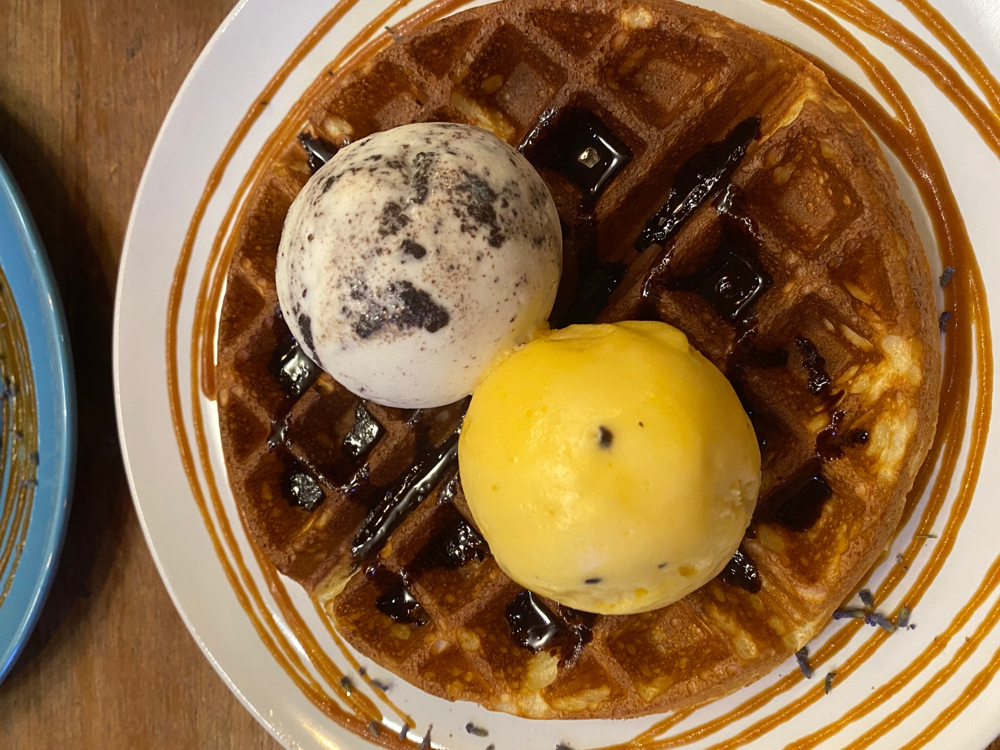
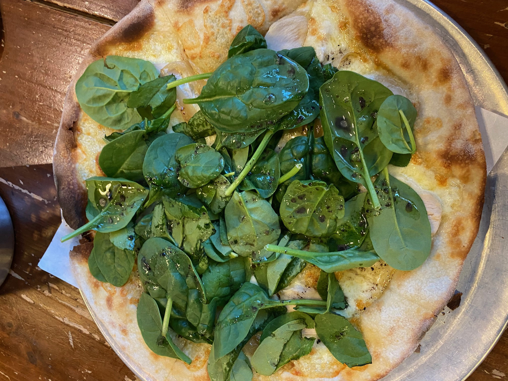
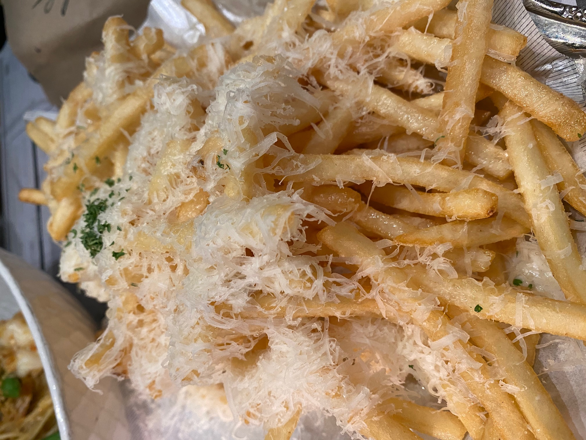
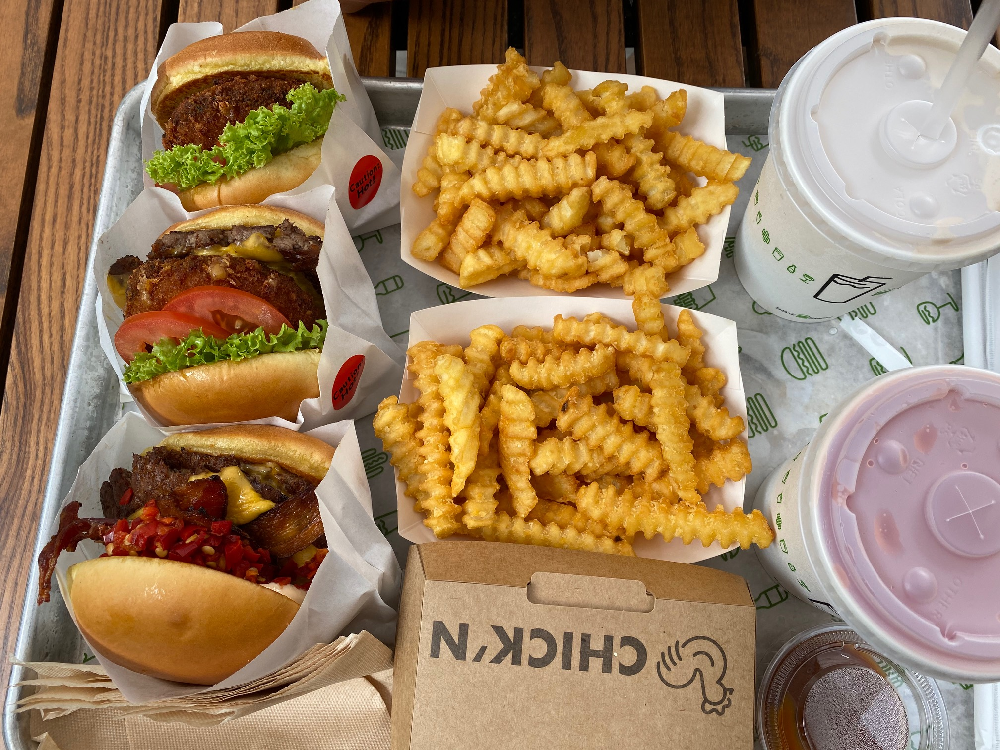
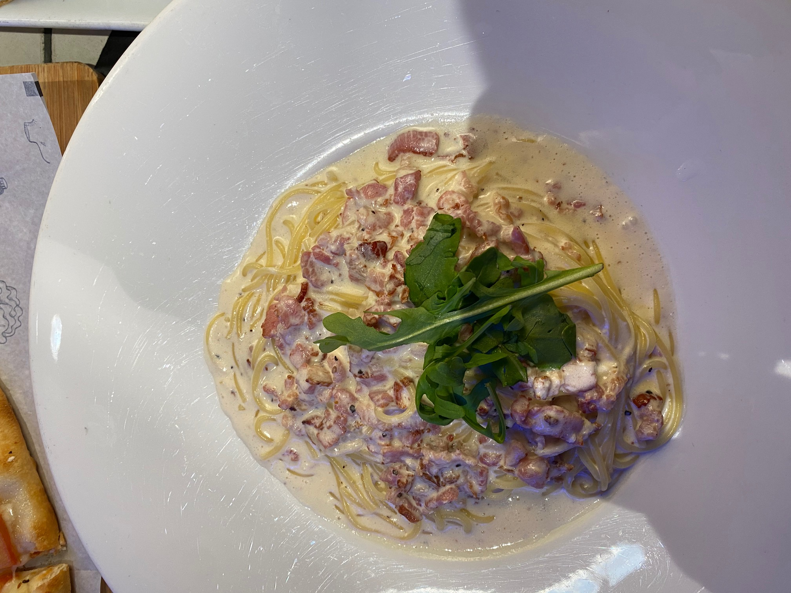

Food Hobby w/ Pics
FATCAT Ice Cream Bar (Bedok)
Place:
FATCAT Ice Cream Bar (Bedok)
Name of dish:
Ice Cream Waffle w/ Mango Sorbet & Cookies and Cream
Favourite Part of it:
Mango Sorbet was just sour enough that it tasted citrus-y, but it was not overpowering and didn't mask the other flavours.
The Cookies and Cream had large cookie bits that tasted soft and matched the sweetness of the waffles.
Pepperoni Pizzeria (Buona Vista/Bugis)
Place:
Pepperoni Pizzeria (Buona Vista/Bugis)
Name of dish:
White Truffle Pizza
Favourite part of it:
The white truffle pizza had very strong fragrance and the ingredients really matched well with each other.
The crust was thin and very crispy, which really brought out the Italian culture and flavour in pizzas.
(Not recommended for takeaway!)
P.S. Cafe (A lot of places)
Place:
P.S. Cafe (A lot of places)
Name of dish:
Shoestring Truffle Fries
Favourite part of it:
The shaved parmesan on the fries, along with the truffle oil drizzled on the fries really brought out the fragrance of the fries.
Huge portion of fries (perfect for 2-3 people) with generous shavings of parmesan cheese. They were pretty liberal with the truffle oil as each chip was perfectly coated.
(Unfortunately I don't have more pictures of food from here, but I really love a lot of the main courses eg. King Prawn Aglio Olio!)Shake Shack (Everyone knows) (Neil Rd)
Place:
Shake Shack (Neil Rd, Jewel)
Name of dish:
Shack Stack, Smoke Shack, Strawberry Shake
Favourite part of it:
I love the portobello mushroom in the Shack Stack. For me, the Shroom Burger on its own is not enough to make me full, so I usually go for the Shack Stack which includes both the mushroom and the beef.
Shake is not bad but quite sweet, very filling on its own so I don't recommend getting it together with the Stack, otherwise you'll be too full.
Pan Pacific Hotel (Restaurant Breakfast)

Place:
Pan Pacific
Name of dish:
Fried eggs with bacon and toast / English breakfast
Favourite part of it:
The eggs were freshly cooked and the bread is well-toasted. This made it tasty to eat the eggs, bacon and bread together as the bread wasn't soggy and flimsy.
Hotdogs and mushrooms on the side were well-seasoned, along with the crispy hashbrown made the whole meal quite fragrant. Nothing was overly seasoned, and each individual item on the plate could be tasted even if they were eaten at once.
Marche (Suntec City)
Place:
Suntec City
Name of dish:
Carbonara
Favourite part of it:
The eggs were freshly cooked and the bread is well-toasted. This made it tasty to eat the eggs, bacon and bread together as the bread wasn't soggy and flimsy.
Hotdogs and mushrooms on the side were well-seasoned, along with the crispy hashbrown made the whole meal quite fragrant. Nothing was overly seasoned, and each individual item on the plate could be tasted even if they were eaten at once.